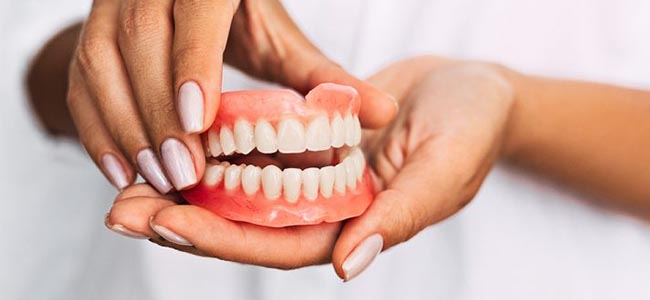

Cirurgia Dentaria
A perda dos dentes sempre é um motivo de desconforto e preocupação. Além de prejudicar a estética de seu sorriso, esse dano também pode dificultar a fala, a mastigação e a formação de toda a arcada dentária.É por isso que cerca de 39 milhões de brasileiros fazem uso das chamadas próteses dentárias, que podem resolver muitos problemas de forma definitiva. E tem mais: um em cada cinco brasileiros usam próteses móveis.
A justificativa para esses números é simples: a prótese dentária se tornou mais acessível, confortável e simples com o avanço da odontologia. Apesar disso, o assunto ainda desperta muitas dúvidas. Por exemplo: quais são as opções disponíveis para quem sofre uma perda dental? Quem pode colocar uma prótese? Como o procedimento é feito?

Fique por dentro de todas as informações sobre prótese dentária, caso resolva optar por esse tipo de tratamento estético.
Você tem dentes faltantes na boca e muita vergonha de sorrir em público ou até conversar com as outras pessoas?
Você tem dentes faltantes na boca e muita vergonha de sorrir em público ou até conversar com as outras pessoas?
Uma prótese dentária deve ser usada quando o paciente tem um ou mais dentes faltantes na boca. O principal objetivo é substituir todos os elementos dentários faltantes, seja na arcada superior ou inferior. As próteses podem ser fixas ou móveis e somente o dentista é quem pode indicar a melhor opção para o paciente, depois de um diagnóstico prévio.
R$ 1.060,00 (mil e sessenta reais) a R$ 2.785,00 (dois mil setecentos e oitenta e cinco reais) por unidade.